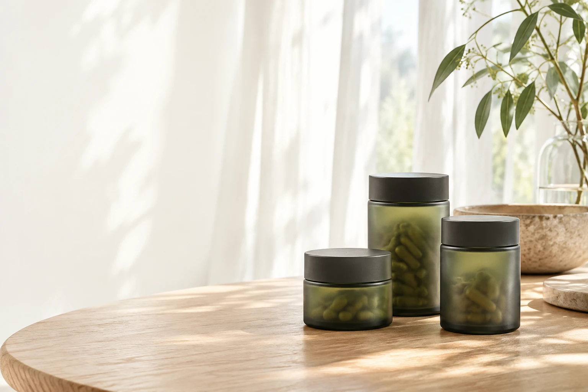
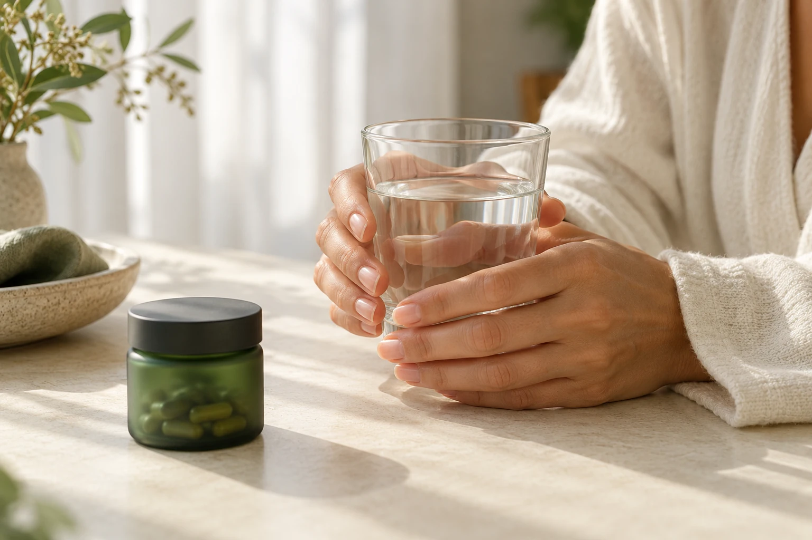

Začněte tím,
co je uvnitř.
Seznam ingrediencí je první krok. Věnujte pozornost konkrétním složkám, jejich formě a doporučenému použití.

MIJOLI / KAŽDÝ DEN
Pečlivě vybrané doplňky stravy, bylinné elixíry a superpotraviny. Váš rituál začíná porozuměním.
VYBRÁNO PRO KAŽDÝ DEN
Každý jsme jiný.
Začněte tím, co vám dává smysl.
PŘÍRODA / V SOUVISLOSTECH
V Mijoli věříme, že dobrý výběr začíná jasnými informacemi. U složení, které si můžete přečíst. U formy, která vám vyhovuje. U drobností, které zapadnou do vašeho dne.
Rostlinné extrakty, vitaminy i další složky. V detailu každého produktu najdete jejich seznam, doporučené užívání a důležitá upozornění.
Prozkoumat produktyPříroda má svou vlastní strukturu.
Náš výběr má svou logiku.
MIJOLI / CELÝ VÝBĚR
Kapsle, elixíry i superpotraviny.
Objevte formu, která vám sedne.
NÁŠ PŘÍSTUP / 01—03
Prostor pro informovaný výběr.
A pro váš vlastní způsob.
Seznam ingrediencí je první krok. Věnujte pozornost konkrétním složkám, jejich formě a doporučenému použití.
Kapsle, bylinný elixír, nebo superpotravina? Praktická forma má místo ve skutečném každodenním životě.
Malý okamžik pro sebe. S respektem k doporučenému dávkování a k tomu, co je pro vás přirozené.

KAŽDODENNOST / VLASTNÍ TEMPOTAK JEDNODUCHÉ, JAK TO ZNÍ
Rituál nemusí být složitý. Stačí forma, které rozumíte, a prostor, který si pro ni najdete.
Prohlédněte si kategorie nebo si nechte výběr zúžit naším krátkým průvodcem.
Než se rozhodnete, přečtěte si složení, použití a upozornění na produktu.
Řiďte se doporučeným užíváním a vytvořte si svůj vlastní každodenní okamžik.
Vybírejte podle složení, formy a doporučeného použití. Podrobné informace najdete u jednotlivých produktů. Při nejistotě, užívání léků nebo specifických potřebách konzultujte výběr s lékařem či lékárníkem.
Otevřete detail produktu a přejděte na jeho úplné informace v obchodě Mijoli. Před užíváním se vždy řiďte údaji na obalu konkrétního výrobku.
Vyzkoušíte si výběr, košík i průchod objednávkou. Objednávka je pouze ukázková: nic neodesílá a neprobíhá žádná platba. Pro skutečný nákup použijte odkaz na produkt ve stávajícím obchodě Mijoli.
Aktuální možnosti a ceny zjistíte v košíku stávajícího e-shopu Mijoli. V tomto náhledu jsou způsoby dopravy a platby pouze pro vyzkoušení nákupního toku.
VÁŠ RITUÁL ZAČÍNÁ U VÁS
Vyberte si formu, která zapadne do vašeho života.
Nebo prohlédnout všechny produkty